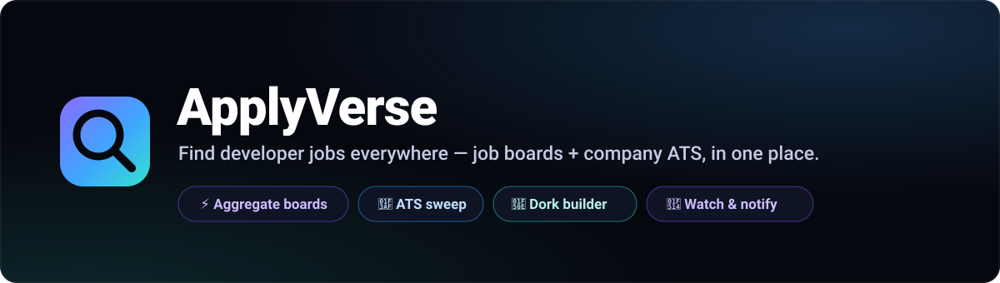
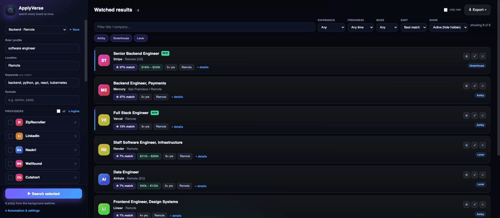

A free, open-source Chrome extension that searches 12 job boards and company career pages, then merges everything into a single de-duplicated, fit-scored list. No server. Nothing leaves your browser.
Job aggregators only index a slice of what's actually open. A huge number of roles live only on each company's applicant tracking system — Greenhouse, Lever, Ashby, Workable, Personio, Recruitee — and never reach LinkedIn or Indeed at all. ApplyVerse reads both worlds and unifies them.
A job posted to five boards collapses into one row that keeps all its sources.
Reads companies' public career APIs directly — no login, no tabs, no scraping.
Finds ATS pages Google already indexed and pulls their full listings in one click.
Sweeps on a schedule and notifies you the moment a new matching role appears.
Rank by match; filter by experience, work mode, freshness; mark Saved / Applied / Hidden.
CSV, JSON, or Markdown you can paste straight into Notion.

applyverse-<version>.zip from the
latest release and unzip it.chrome://extensions and turn on Developer mode (top right).applyverse folder.ApplyVerse has no backend. Search profiles, results, and apply-tracking live in your browser's local storage and are deleted when you uninstall. There is no account, no analytics, and no remote code — read the full privacy policy.